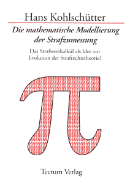

In memoriam, 7.7.1943 — 28.12.2018
hans@kohlschuetter.de
|
|
|
|
| | |
|
Dr. iur. Hans Kohlschütter In memoriam, 7.7.1943 — 28.12.2018 hans@kohlschuetter.de | |
|
| Klicken Sie bitte auf die farblich hervorgehobenen Wörter, um weitere Informationen zu erhalten |
| Zurück zur Startseite (dort finden Sie Informationen zu weiteren Büchern) |
|
Zweites Buch Hans Kohlschütter Die mathematische Modellierung der Strafzumessung DAS STRAFWERTKALKÜL ALS IDEE ZUR EVOLUTION DER STRAFRECHTSTHEORIE? Erschienen 1998 150 Seiten ISBN 3-8288-9029-6 Buchvorschau bei Google Books Eine ausführliche Beschreibung findet sich weiter unten auf dieser Seite! |  |
|
Tectum-Verlag
1. Kurzbeschreibung
Der qualitative Inhalt jeglicher Straftat ist in quantitativer Form darstellbar, wenn diejenigen Merkmale bzw. Eigenschaften identifizierbar sind, die einerseits für die Begriffsbestimmung wesentlich und andererseits für die Gegenstandsbestimmung der Straftat messbar sind. Hierzu wird die Anatomie des Unwertentstehungsprozesses "Straftat" analysiert sowie die dazu isomorphe Architektur der Theorie rekonstruiert, die dafür gebraucht wird, eine Terminologie für die methodische Anleitung dafür herzustellen, dass beweisbar ist: Der jeweils einschlägige Strafausspruch ist dem zugrundeliegenden Schuldspruch äquivalent (inter- und intradeliktisch unwertproportional). Angestrebt wird ein Strafwertkalkül und damit die Befreiung der Strafrechtstheorie vom "Einerseits und Andererseits" des dogmatisch-topischen Meinungswissens, dessen Immunabwehr gegen experimentierendes Denken und interdisziplinäre Ansätze zu knacken versucht wird.
Im vorliegenden Buch findet sich der Text zweier Abhandlungen, die folgende Gemeinsamkeiten und Unterschiede haben: Zu ihrer Gemeinsamkeit gehört, dass sie innerhalb der ersten Hälfte des Jahres 1998 fertiggestellt bzw. geschrieben worden sind. Ihr Gegenstand hat ein und dasselbe Thema, wie sich aus dem Buchtitel ergibt. Zu ihrem Unterschied gehört, dass sie für einen jeweils anderen Leserkreis geschrieben worden sind. Der eine Beitrag richtet sich an Praktiker, die zwischen "scientific correctness" und "Theoriemüdigkeit" differenzieren, der andere an Theoretiker, die rechtsprechungswissenschaftliche Erkenntnisschranken transzendieren (können), (vgl. Kedrov, Zur Theorie der wissenschaftlichen Entdeckung, in: Wissenschaftliches Schöpfertum, ed. Kröber & Lorf, 1972, S.34 (93 ff)), und die infradisziplinäres Wissen haben (wollen), (vgl. Lorenzen, Interdisziplinäre Forschung und infradisziplinäres Wissen, in: Theorie der technischen und politischen Vernunft, 1978, S.104 (117)). Ursprünglich war eine getrennte Publizierung vorgesehen. So überschneiden sich die Ausführungen. Das Schaubild mit der Darstellung des Tabellarischen Systems der Straftaten (TSS), S.83, bezieht sich auf die deutsche Strafrechtslage per 01.04.1998. Der im zweiten Teil abgedruckte Text ist vorab bei Tectum auf Mikrofiche im März 1998 erschienen.
Das mehrfach zitierte Werk des Verfassers (Die strafrechtstheoretische Lösung der Fälle des indirekten Verbotsirrtums) ist im Internet wie folgt zugänglich: Besonderen Dank schulde ich Frau Edith Montag, die die Reinschrift des Manuskripts sowie die Zeichnung der Figuren und Schaubilder besorgt hat. Die Grafik auf dem Einbanddeckel folgt dem Entwurf meiner Söhne Stefan und Christian.
Hof, 26.09.1998
|
||||||||||||||||||||||||||||||||||||||||||||||||||||||||||||||||||||||||||||||||||||||||||||||||||||||||||||||||||||||||||||||||||||||||||||||||||||||||||||||||||||||||||||||||||
Anläßlich eines systematischen Vergleiches der Irrtumstheorien werden der Ursprung und die Existenz der strafrechtlichen Unwertform in Analogie zur ökonomischen Analyse der Wertform in der Absicht ergründet, daß "Problemlösungskraft" gewonnen wird, und zwar für die Beilegung sowohl des Streits zwischen den Irrtumstheorien als auch der darin zum Vorschein kommenden Ungereimtheiten der Delikts- und Strafzumessungstheorie, sowie insbesondere der praktischen Schwierigkeiten bei der willkürfreien Begründbarkeit strafrechtlicher Entscheidungen.
Ad bb) Die Vergegenwärtigung des methodologischen Dilemmas im herkömmlichen strafrechtswissenschaftlichen Vorverständnis Pseudorational ist auch das Treppenstufen-Modell der Straftat, wonach - wiederum blindlings und arglos - die Bestrafungsvoraussetzungen entweder in zwei oder drei "Stufen" zusammengefaßt und dementsprechend in entweder zwei oder drei "Schritten" subsumiert werden sollen. Diese strukturelle Vorgabe der Subsumtionsreihenfolge, die sich aus dem "System Straftat" ergebe, führt zu einer methodologischen Fingierung von Bestrafungsvoraussetzungen, was gegen den Grundsatz "nullum crimen et nulla poena sine lege" verstoßen kann. Praeter legem wird ein Definitionseffekt erzeugt, der wie ein gesetzesvertretendes artifizielles Sondertatbestandsmerkmal wirkt, indem, nolens volens, insbesondere bei der Lösung von Irrtumsfällen, entweder ein Vorsatzausschluß oder eine Vorsatzunschädlichkeit resultiert. In Wahrheit wird dieses Ergebnis durch eine Vorentscheidung präjudiziert, nämlich durch eine unbegründbare Präferenz zugunsten der Zwei- bzw. Dreistufigkeit sowie insbes. durch die "Zuweisung", "Unterbringung" bzw. "Verbannung" der einzelnen Bestrafungsvoraussetzungen in die eine oder andere Stufe; ist das jeweilige "Vorverständnis" des "Aufbaus der Straftat" unhintergehbar? Es mag zwar sein, daß die Anwendung jeglicher Methoden oder Verfahren oder sonstiger Mittel dem zu untersuchenden Gegenstand "angemessen" sein muß, so daß also gilt: Der Gegenstand determiniert die Methode. Was aber ist der jeweilige Gegenstand? Nichts existiert isoliert. Der Gegenstand ist das, was sich bei Anwendung der Methode ergibt. Ergo: Die Methode determiniert den Gegenstand! Ist dieses zirkuläre Verhältnis ein unentrinnbares Dilemma?
Jedes beobachtete "Faktum" repräsentiert eine bestimmte Lösung des Problems, mit welchen Mitteln man das Ziel anstreben soll, eine bestimmte Hypothese (Theorievorstadium) durch eine Beobachtung zu verifizieren bzw. zu falsifizieren. Da jede Problemlösung zweiteilig ist, nämlich sowohl aus einer Aussage über das Ergebnis der Lösung des Problems als auch aus einer Aussage über die Begründung des Ergebnisses der Lösung des Problems besteht, kann jede Problemlösung "systematisch" als Entstehungsprozeß ihres Ergebnisses begriffen werden. Beobachtungen sind also Systeme, die eine prozessuale Struktur haben. Heisenberg spricht vom "Beobachtungsprozeß" (aaO, S. 685). Die Elemente dieses Systems sind der Anfang sowie die Ablaufphasen, die jeweils die Stationen der Teilergebnisse bestimmen, und schließlich das Endergebnis, das ebenso wie die anderen Elemente, die ihrerseits, und zwar als statisches System, diverse Elemente aufweisen können, deren Entstehung im prozessualen Ablauf des gesamten System nachweisbar sein muß. Diese Unterscheidungen gelten auch für die Beobachtung ("Erkenntnis"), daß ein Strafrechtsfall eine bestimmte Lösung habe, nämlich z.B., daß die Aussage begründet sei, eine bestimmte Straftat existiere. Diese Feststellung erfordert die Identifizierung des isomorphen Entstehungsprozesses der Straftat. Wenn die Systemkomplexität in kontrollierter und koordinierter Weise reduziert werden soll, ist man evtl. für die terminologische Begriffsbildung insbesondere auf die Methode der "Definition durch Abstraktion" angewiesen (vgl. dazu unten Ziff. 5 II)?
Jedenfalls begreift Hegel jegliches "Gefühl" (das er als Gegenteil der "reflektierenden Urteilskraft" umschreibt) als "inwendiges Orakel" (Phänomenologie des Geistes, in: Hegel Werke, 1986 stw, Bd. 3, S. 64) bzw. "unentwickeltes (inhaltsloses) Bewußtsein" (Nürnberger und Heidelberger Schriften, aaO., Bd. 4, S. 57f bzw. Berliner Schriften, aaO., Bd. 11, S. 59) bzw. als "tierische Weise des Geistes" (Vorlesung über die Geschichte der Philosophie, aaO., Bd. 20, S. 206); Kant betrachtet die Urteilskraft als geistiges Vermögen ("Talent"), die Richtigkeit einer Subsumtion zu erkennen (Kritik der reinen Vernunft, Reclam 1945, S. 342), wobei mangelnde Urteilskraft als "Dummheit" erscheint (aao, S. 234, 984). Hieraus folgt das Programm der Jurisprudenz, nämlich eine "Klugheitslehre" zu sein, und als solche die Fähigkeit zu fördern, daß man bemerkt, einen Gedankengang nicht verstanden zu haben, bevor er akzeptiert wird. Nimmt man an, daß das Rechtsgefühl ein Bewußtseinsvorstadium ("unreflektierend") ist, so ist unvermeidbar, daß jegliche Inhaltsbestimmung dieses "rudimentären Bewußtseinsinhalts" allenfalls in obskurer Form zur Sprache gebracht werden kann, z.B. wiefolgt: Das Rechtsgefühl ist die unbegründbare Ahnung der Richtigkeit der imaginären Voraussage seines Inhabers, daß ein bestimmtes Argument, das er aufgestellt hat, bei Rekonstruktion des zugrundeliegenden konkreten Streits in einem herrschaftsfreien fiktiven Diskurs von einem unbefangenen, sachkundigen und vernünftigen Beobachter als überzeugend erachtet werden würde! Dies bedeutet, daß das Rechtsgefühl ebensowenig wie die Stufenlehre der Straftat als operationale und transparente Methode oder gar plausibler "Detektor" für die Gewinnung der richtigen Intuition bei der Lösung von Rechtsfällen und erst recht von Strafzumessungsfällen wirkt. Gegeben ist damit eine sprachlose "Quelle der Rechtsgewinnung", durch die eine Sprachbarriere aufgebaut und die Rechtserkenntnis blockiert wird. Die Stufenlehre beinhaltet keine begründbare Anleitung für den Erkenntnis- bzw. Rechtsgewinnungsprozess. Denn es fehlt jeglicher Zusammenhang mit der Struktur der Straftat. Die Theorie über die Straftatstruktur sagt nichts darüber, welcher Zusammenhang zwischen der Rechtsgutsverletzung und Rechtspflichtsverletzung einerseits und den Subsumtionsphasen andererseits, nämlich der Tatbestandsmäßigkeit und der Rechtswidrigkeit und der Schuldstufe bestehe und sagt auch nichts über den Modus der "Verteilung" der Bestrafungsvoraussetzungen auf die einzelnen Subsumtionsschritte bzw. "Sedimentschichten" der "Treppenstufen" des Weges, der zur Erkenntnis des Schuldspruchs führen soll.
Freilich gibt es keinen "Lackmustest", im Sinne eines Indikators, dessen Anwendung intersubjektiv überprüfbar ist. Aber vielleicht hilft eine Reorganisation der Merkmale des Straftatbegriffs? Dies wird in der neuen Abhandlung in Angriff genommen. Die mangelnde Problemlösungskraft des Stufendogmas wird in der Einleitung des ersten Teils (Die Metamorphose des Schuldspruchs in den Strafausspruch) erörtert. Nunmehr folgt eine Inhaltsangabe der beiden Hauptteile der Abhandlung:
I. Vorbemerkung Was bietet die Abhandlung1, die aus zwei Teilen (Referat und Korreferat) besteht, die in umgekehrter Reihenfolge abgedruckt sind? Die jeweilige Fragestellung und Ausgangsposition ist gleichartig. So lautet der erste Satz der Einleitung des ersten Teils (Die Metamorphose des Schuldspruchs in den Strafausspruch. Ein Beitrag zur strafrechtlichen Operationsforschung) wie folgt: "Beabsichtigt ist die Herstellung einer Handlungsanleitung für die Darstellung des qualitativen Inhalts jeglicher Straftat in quantitativer Form". Die Vorrede zum zweiten Teil des Buches (Die graduelle Unwertproportionalität des Strafmaßes. Zur Tabellierung und Quantifizierung des interdeliktischen und intradeliktischen Straftatunwerts der strafrahmenbegründenden Delikts und strafrahmenausfüllenden Tatbegehungstypen) beginnt wie folgt: "Vermutlich gibt es nur eine einzige strafrechtliche Streitfrage, für deren Beantwortung nicht die Rechtsprechung, sondern die Wissenschaft prädestiniert ist. Sie lautet: Wie ist erreichbar, dass Strafmaßentscheidungen treffsicher prognostizierbar werden?" Die Forschungsfrage wird gleich zu Beginn der Abhandlung wie folgt formuliert: "Wie ist die Qualität an Strafzumessungsschuld, die im Schuldspruch des Urteils bezeichnet wird, quantitativ bezifferbar, und wie ist sie in das im Strafausspruch anzuordnende Strafmaß, das eine Quantität an Strafwertqualität ist, transformierbar?"
II. Was bringt die Abhandlung zur Aufstellung eines "Strafwertkalküls"?
Wenn ein Strafausspruch hergestellt werden soll, der dem zugrundeliegenden Schuldspruch des Urteilstenors angemessen ("proportional") ist, dann bedarf es einer Idee für den Übergang vom Schuld- zum Strafausspruch. Dies ist der Ansatz für die Entwicklung einer Handlungsanleitung, deren Anwendung die Metamorphose bzw. Äquivalenzumwandlung der delikttheoretischen Form der qualitativen Inhaltsbestimmung der Straftat in die strafzumessungsrechtliche Form ihres quantitativen Pendants erlaubt. Allerdings findet sich ein Hindernis für die Verwirklichung dieser Idee im herkömmlichen Straftatbegriff, wonach die Straftat eine Rechtsguts- und Pflichtverletzung sei. Diese Definition beinhaltet kein Gattungsmerkmal. Die "Verletzung" eines Rechtsgutsobjekts ist etwas anderes als die einer Rechtspflicht. Darüber hinaus fehlt jeglicher Hinweis auf die Existenz einer quantifizierbaren Eigenschaft im Gegenstand der Straftat. Damit ist der Übergang vom Schuld- zum Strafausspruch versperrt. Es bedarf einer Straftatdefinition, die eine Verbindung zwischen der Delikttheorie und der Strafzumessungslehre eröffnet. In Betracht kommt eine "Definition durch Abstraktion" (vgl. Kamlah-Lorenzen, Logische Propädeutik, Vorschule des vernünftigen Redens, 1973, 2.Aufl., S.86,94,150 ff; Kondakow, Wörterbuch der Logik, 1983, 2.Aufl., S.117,39,12,265; Metzler DtZPhil 1984, 936; Mittelstraß (ed.), Enzyklopädie Philosophie und Wissenschaftstheorie, Bd.I, 1980, Stichwort "Abstraktion", S.37; Patzig, Sprache und Logik, 1970, S.57), die der Verfasser bereits früher formuliert hat2, ohne dass man freilich hiervon Notiz genommen hat. Die vorliegende Abhandlung ist die Nutzanwendung der These, wonach die qualitative Identifizierung der quantitativen (graduell abstufbaren) Determinante des Strafwerts aufgrund eines neuen Straftatbegriffs möglich sei, der aus dem herkömmlichen Begriff abgeleitet wird: "Eine Straftat ist jede Sozialgefährlichkeit (sozialgefährliche Tat), die invariant ist in Bezug auf Handlungsunwert i.w.S." (inter- und intradeliktischer unwertproportionaler Strafwert)! Bei der Definition durch Abstraktion wird die spezifisch allgemeine Eigenschaft der Angehörigen der zu definierenden Objektklasse artikuliert. Dies ist diejenige mathematisch formulierbare Bestimmung, die das "Besondere" im Verhältnis zwischen dem Hegelschen konkret allgemeinen Begriff einerseits und dem abstrakt allgemeinen Begriff andererseits beinhaltet. Wir erhalten folgende Umschreibung dieser Definitionsart: Die "spezifisch allgemeine" Eigenschaft aller Elemente einer "Untermenge", z.B. die gemeinsame Eigenschaft aller Gegenstände, die Straftaten sind, ist diejenige Eigenschaft, in bezug auf die sich die Elemente nicht unterscheiden, z.B. im Falle der Straftaten, daß alle Taten einerseits sozialgefährlich sind und andererseits "Handlungsunwert i.w.S.", d.h. Strafwert in dem Maße aufweisen, wie dem Produkt zwischen der Quantität des interdeliktischen Unwertquantums des jeweiligen Deliktstyps und der intradeliktischen Unwertquote des jeweiligen Begehungstyps entspricht. Kondakow bildet folgendes Beispiel für eine Definition durch Abstraktion, und zwar für die Farbe "Grün": Sie ist die spezifisch allgemeine Eigenschaft aller Gegenstände, die die gleiche Farbe wie frisches Gras haben. In seinem Artikel "Begriffsbildung" (Wörterbuch der ml Soziologie, 1969, 1. Aufl., S. 59), referiert Peter Ruben mustergültig die von Lorenzen entwickelte Theorie der Definition durch Abstraktion. In den folgenden Auflagen des eben erwähnten Wörterbuchs (1977, 1983) wird zur Sprachregelung der Parteiphilosophie zurückgekehrt; die Definition durch Abstraktion wird eskamotiert. Mit anderen Worten: Alle Taten, die in Bezug darauf "gleich" (äquivalent substituierbar bzw. invariant) sind, dass sie jeweils "Handlungsunwert im weiteren Sinne" (unwertproportionalen Strafwert) aufweisen, heißen "Straftaten" (vgl.auch Puchnatschow/Popow, Mathematik ohne Formeln, 1985, S.78).
Postuliert wird weiter, dass die destruktive Art der Tatbegehung, die in Form einer Schweregradtabelle skalierbar ist, den Prozentsatz determiniert, mit dem das arithmetische Mittel des für die jeweils betrachtete Straftat einschlägigen Strafrahmens modifiziert wird.
Die allgemeingebräuchliche Redeweise über die "kriminelle Energie" betrifft das "Straftatherstellungsvermögen" und ist nichts anderes als das Handlungsvermögen, dessen Verwertung zur Straftat in Analogie zum arbeitswerttheoretischen Warenentstehungsprozess begriffen wird. Dieser beruht bekanntlich auf der Theorie der Doppelnatur des Arbeitsvermögens bzw. der Arbeitskraft. Der Prozentsatz der Destruktivität der Tatbegehung ist dann der Wirkungsgrad der Umsetzung des Straftatherstellungsvermögens in die Tat. Die Nutzung der in Form des Handlungsvermögens gegebenen Kraft, entschlossen, besonnen und geschickt eine Tat auszuführen, erweist sich als Substanz des Unwerts der Straftat.
Weiter wird der "mediale Stoff" der "Straftatmäßigkeit und Strafwertmäßigkeit" zur Sprache gebracht, indem der Nötigungshandlungsunwert zum Messstandard erklärt wird. Mathematisches Wissen wird nicht vorausgesetzt, wohl aber eine Erinnerung an die Qualifizierung der Atomarten im Periodischen System der chemischen Elemente, wonach die Ordnungsnummern lediglich Verhältniszahlen in Bezug auf ein bestimmtes Kohlenstoffisotop sind. Strafrechtstheoretisch ist das Vergehen der Nötigung der Dreh und Angelpunkt der Klassifizierung und Quantifizierung der Straftaten.
Inauguriert wird der Übergang der gegebenen Strafzumessungspraxis zur Strafzumessungswissenschaft; das bisher in der Strafrechtstheorie allein qualitative Räsonnement wird nunmehr ersetzt durch eine Terminologie, für deren Gegenstände sowohl die klassifizierenden wie auch die messbaren Merkmale angegeben werden (sollen). Zumindest wird diese methodische Maxime angestrebt.
Die Herstellung eines Strafwertkalküls aufgrund der mathematischen Modellierung der Strafrechtsgewinnung und der physikalischen Modellierung der Straftat bleibt freilich das Desiderat; dass im Titel auf dem Einband zuviel versprochen wird, versteht sich von selbst, aber es wird der Weg zum Ziel gebahnt bzw. beschrieben.
So wird die Unterscheidung zwischen der Qualität und Quantität folgender Kategorien eingeführt: Einerseits sind die strafrahmenbegründenden Unwertparameter des jeweiligen Deliktstyps (arithmetisches Mittel der gesetzlich angedrohten Mindest und Höchststrafe) gegeben. Andererseits sind die strafrahmenausfüllenden Unwertparameter des jeweiligen Tatbegehungstyps (Wirkungsgrad der destruktiven Unwertausprägung in Form der Unwertquote) gegeben; die Strafwertgröße ist das Produkt der beiden quantitativen Parameter.
Die Tatbegehung wirkt als Faktor für die Entstehung des gesamten Unwertquantums aller einzelnen Arten der Unwertentstehungsparameter (Unwertdifferentiale, Unwertmonaden), die systematisch aufgelistet werden, nämlich in einem Tableau sowohl der Arten der interdeliktischen Unwertquanten (strafrahmenstiftende Deliktstypen) als auch der Arten und Unterarten der intradeliktischen Unwertquanten (strafrahmenausfüllende Tatbegehungstypen). Diese beiden tabellarischen Systeme bilden zusammen mit der völlig neuen Konstruktion des Straftatbegriffs, der bisher als Rechtsguts und Pflichtverletzung konzipiert war und als solcher nicht quantifizierbar war, sowie der Aufdeckung der isomorphen Struktur zwischen dem Entstehungsprozess sowohl der Straftat als auch der Strafrechtsfallösung, das Kernstück der Abhandlung. Insoweit findet der Leser eine Erläuterung in Form von Abbildungen auf den Seiten 83 ff und auf Seite 95.
Daneben werden eine Reihe neuartiger Konstruktionen vorgeschlagen, die sowohl gesetzgebungspolitisch wie rechtstheoretisch interessant sind. So wird die Idee der symmetrischen Begriffsbildung bezüglich Vorsatz und Fahrlässigkeit zum Zwecke der Überwindung des gegenwärtigen Erklärungsnotstands bei der eingeschränkten Schuldtheorie vorgeschlagen. Weiter findet sich die Idee der (reversiblen) Konvertierbarkeit zwischen Haft und Geldstrafe. Bislang konnten beide nicht einheitlich aus den Gesichtspunkten der Schuld und der wirtschaftlichen Leistungsfähigkeit des Delinquenten abgeleitet werden. Konstituiert wird so die bislang unbekannte allgemeine Strafwertform, und zwar als Derivat der allgemeinen Unwertform. Für die zwei unterschiedlichen Strafarten gab es bislang keine einheitliche Strafwerttheorie. Die Anzahl der Tagessätze einer Geldstrafe ist bislang noch nicht nach den gleichen Grundsätzen bestimmbar, wie es bei der Anzahl der Hafttage einer Zeitstrafe der Fall ist. Eine bestimmte Haftstrafe konnte nicht in Form einer bestimmten Geldstrafe zum Ausdruck gebracht werden!
Alles in allem wird reflektiert, ob für das Strafzumessungsproblem folgender Lösungsansatz systemfähig ist: Dem arithmetischen Mittel des durch die Proportionalitätskonstante k relativierten interdeliktischen Unwerts aller Deliktstypen ist eine konstante Menge von Unwertinformationen äquivalent, deren konkrete numerische Mächtigkeit dahinsteht. Diese Zuordnungsbeziehung bedeutet, dass das strafwertmäßige Gewicht von deliktstypischen Unwertinformationen davon abhängt, welcher Strafrahmengrößenart die jeweils betrachtete Straftat angehört ("Strafrahmentypabhängigkeit der Wertigkeit der Unwertinformation im Unwert-Strafwertverhältnis"). Da jede Unwertinformation eine Aufforderung ("Anregung") in Bezug auf Begehungsbedenken übermittelt, die bei der jeweils destruktiven Tatbegehung (Gesamtheit der Erfolgs-, Handlungs- und Gesinnungsunwertquanten) mehr oder weniger (Schweregradtabelle) missachtet wird, ist der Strafwert diejenige Quote des arithmetischen Mittels der jeweiligen Strafrahmengrößenart, die sich ergibt, wenn man feststellt, in welchem prozentualen Maße (destruktiver Wirkungsgrad der Umsetzung der kriminellen Energie in Straftatunwert) die straftatmäßigen Begehungsbedenken missachtet worden sind.
Diese neue Strafzumessungsthese beinhaltet damit in Wahrheit das Postulat für ein delikttheoretisches Revirement! Die radikale Lösung des Strafzumessungsproblems erfordert die Rekonstruktion der delikttheoretischen Prämissen, deren strafzumessungsrechtliche Relevanz nicht ausgeklammert, sondern akzentuiert werden muss. Die Erörterung allgemeiner Bestrafungsvoraussetzungen ist umso komfortabler, je weniger man die strafzumessungsrechtlichen Konsequenzen zu bedenken hat. Das Strafzumessungsproblem, wie es Gesetzgebung und Rechtsprechung vorfinden, ist ein Symptom für die mangelnde strafrechtstheoretische Tragfähigkeit und Integrationskraft der Strafrechtsdogmatik, die die gewiss schöne Schuldidee einseitig und ausufernd verhimmelt hat und die alle Dinge, die den Strafausspruch betreffen, als schmutzige Tagesarbeit der Praktiker verdrängt hat. Die delikttheoretischen Prämissen müssen unter dem Gesichtspunkt ihrer Quantifizierbarkeit reformuliert und ausdifferenziert werden.
III. Was bringt die Abhandlung für die im Untertitel annoncierte "Evolution der Strafrechtstheorie"?
a) Erstmals wird der Versuch unternommen, und zwar in Form des oben dargelegten neuen Straftatbegriffs, dass alle Bewertungsmaßstäbe auf einen Nenner gebracht werden, die die Strafzumessungsrelevanz sowohl der Tat als auch des Täters betreffen! Wie können Unrecht und Schuld als Derivate ein und derselben "Substanz" bestimmt werden? Das Handlungsvermögen, das bei der Begehung jeglicher nötigenden Tat verausgabt wird und sich damit als Straftatherstellungsvermögen erweist, kristallisiert als Bestandteil der damit entstandenen Straftat zum Handlungsunwert i.w.S. ("Straftatunwert"); wer eine Straftat begeht, eignet sich zwar "nur" sein eigenes (natürliches, vorfindliches) Handlungsvermögen an, aber dies geschieht unter Missachtung der Tatsache, dass ihm die delikttheoretische Nutzung seines Handlungsvermögens gesetzlich entzogen ist. Ergo nutzt der Straftäter "fremdes" Handlungsvermögen, ein Vorgang, der durch die Verurteilung ausgeglichen werden soll, indem nun die Nutzung des Handlungsvermögens des Täters (Entfaltungsfreiheit, Selbstbestimmung) eingeschränkt wird. Kundgetan wird damit die Gültigkeit und Geltung der Ordnung, die im status quo ante bestanden haben soll.
b) Als Kriterium für die "Angemessenheit" der strafrechtsdogmatischen Termini fungiert die Quantifizierbarkeit ihrer jeweiligen Qualität, was eine Fortführung der von Schmidhäuser entwickelten Idee der teleologischen Begriffsbildung ist. Die Straftatmäßigkeit ist die attributive Beschreibung des qualitativen Aspekts jeder Tat, die Straftatunwert aufweist. Die Strafwertmäßigkeit ist die Beschreibung des quantitativen Aspekts einer solchen Tat.
So wird ein Straftatbegriff gebildet, bei dem einem bestimmten Gegenstand, nämlich jeglicher "Tat", eine Eigenschaftsmenge zugesprochen wird, die unter das Merkmal "Handlungsunwert i.w.S." fällt. Insbesondere werden sowohl die realen Momente der Eigenschaften des Gegenstands der Straftat als auch die normativen Momente der Merkmale ihres Begriffs dargestellt. Der jeweilige Entstehungsprozess geschieht separat; die Phasen des Handlungsprozesses und des Unwertbildungsprozesses laufen zeitgleich nebeneinander ab. Die Fusion der Resultate dieser beiden Prozessabläufe der Straftatentstehung ermöglicht es, Kriminologie und Strafrechtsdogmatik zu integrieren. Darüber hinaus ergibt sich die Chance, dass die strafrechtstheoretische Einheit der Gegenstände der Delikts und Strafzumessungstheorie bestimmbar wird.
Der Handlungsprozess (aufgrund des konkreten Straftatherstellungsvermögens) führt durch spezifische Gefahrverwirklichung (realwissenschaftlicher bzw. kriminologischer Aspekt der Strafrechtswissenschaft) zum sozialgefährlichen Ergebnis der Deliktstatbestandsmäßigkeit bzw. Straftatmäßigkeit. Der Unwertbildungsprozess (aufgrund des abstrakten Straftatherstellungsvermögens) führt zum Unwertprodukt der Straftat in Form der Summe des Unrechts und Schuldunwerts (normativer bzw. dogmatischer Aspekt der Strafrechtswissenschaft).
c) Der Straftatunwert (negativer strafrechtlicher Wert), der in der herkömmlichen Lehre als "amorph" erscheint, zumal die Gemeinsamkeiten und Unterschiede der Unterarten (Erfolgs , Handlungs , Gesinnungsunwert) seiner Quanten nicht bekannt sind, wird durch "Atomisierung" systematisch, nämlich straftattypisch (interdeliktisch) und straftatbegehungstypisch (intradeliktisch) spezifiziert, klassifiziert und quantifiziert. Die Informationen über die Gefahrerhöhungsumstände und Begehungsbedenken können als "Quasiteilchen" in Form von Unwertdifferentialen bestimmter Richtung (straferhöhend bzw. strafmildernd) und damit als vektorielle Unwertparameter gedeutet werden, deren innere Ordnung durch ein System von Kennziffern simulierbar ist.
d) Die herkömmliche Strafrechtstheorie, insbesondere die Delikts und Irrtumstheorie, wird bereits in der Einleitung der Abhandlung ad absurdum geführt. Hierzu bedarf es nicht einmal des neuen Straftatbegriffs, sondern lediglich der Verwertung einer wissenschaftstheoretischen Anleihe: Jede Terminologie ist zwar theorieabhängig, aber dies gestattet nicht, für die Lösung der einzelnen Arten von Irrtumsfällen nebeneinander unterschiedliche Delikttheorien bzw. irrtumstheoretische Terminologien anzuwenden. Die eingeschränkte Schuldtheorie hat keine Existenzberechtigung, da sie ein zwitterhaftes Kombinat ist. Sie widerspricht der Vorsatztheorie, soweit sie Vorsatzunschädlichkeit für das Ergebnis der Lösung der Fälle des Erlaubnisirrtums verspricht. Sie widerspricht der strengen Schuldtheorie, soweit sie Vorsatzausschluss für das Ergebnis der Lösung der Fälle des Erlaubsnistatbestandsirrtums verspricht. Sie stimmt mit der strengen Schuldtheorie überein, soweit sie für das Ergebnis der Lösung der Fälle des Erlaubnisirrtums Vorsatzunschädlichkeit verspricht. Sie stimmt mit der Vorsatztheorie überein, soweit sie für das Ergebnis der Lösung der Fälle des Erlaubsnistatbestandsirrtums den Vorsatzausschluss verspricht. Aber auch die Vorsatztheorie und die strenge Schuldtheorie sind strafrechtstheoretisch unangemessen, da in ihnen jeweils konkludent eine tatbestandliche Merkmalsunterstellung praeter legem enthalten ist, die in einem subsumtionsmethodischen Gewande verkleidet ist, nämlich die deliktstheoretische Zweistufigkeit (Vorsatztheorie) bzw. Dreistufigkeit (strenge Schuldtheorie). Nachgewiesen wird, dass diese beiden Alternativen jeweils unhaltbar sind. IV. Selbstkritik Die Zweispurigkeit, d.h. die doppelaktige Struktur, des Straftatentstehungsprozesses (Handlungsprozess für die Entstehung der Sozialgefährlichkeit der Tat einerseits und Unwertbildungsprozess für die Entstehung des Unrechts- und Schuldunwerts der Tat andererseits) ist bereits in der ursprünglichen Veröffentlichung (1989, 2. Aufl.) dargestellt, erläutert und graphisch veranschaulicht worden (aaO, S. 126 Abb. 1, 157 ff). Das Kernstück der (neuen) Abhandlung besteht darin, die Straftaten in Form eines tabellarischen Systems (TSS) zu ordnen. Damit wird ein Weg bereitet, der evtl. geeignet ist, das Strafrecht der europäischen Staaten zu vergleichen. Im übrigen enthält die erörterte Thematik einen ganzen Problemkomplex: Ist es die neue Inhaltsbestimmung des "Irrtumsproblem"? Ist es die schöpferische Zerstörung des traditionellen Stufendogmas? Ist es die Rekonstruktion der herkömmlichen Unwertlehre? Ist es die Entdeckung der Symmetrie zwischen dem jeweils tatbestandsunabhängig (protojuristisch) begriffenen Termini der natürlichen Vorsätzlichkeit und Fahrlässigkeit? Ist es die strafrechtliche Umwertung der Theorie der politischen Ökonomie? Darüber hinaus sind zahlreiche Fragen offen geblieben, insbesondere die vorgeschlagene Zuordnung von Kennziffern hinsichtlich der Skalierung der Unwertparameter. Die Skalenwerte sind noch nicht ausdifferenziert. Noch nicht zu Ende gedacht ist die konkrete Punktzuordnung für die einzelnen Strafzumessungsfaktoren bzw. Unwertparameter. Ob es gelungen ist, einen neuen Ansatz für die Herstellung einer strafrechtstheoretischen Terminologie zu finden, die es erlaubt, das Unwertprodukt der Straftatbegehung zu quantifizieren, kann nur in einer kritischen Diskussion geklärt werden. V. Exkurs: Das Zusammenspiel von "inneren" und "äußeren" Bedingungen als interdisziplinäres Problem Die deliktstypischen Bestrafungsvoraussetzungen, die die expliziten Merkmale des Deliktstatbestands und damit "Bedingungen innerer Art" sind, begreifen wir im Falle ihrer Erfüllung als "strafrahmentypbegründende Unwert-Variablen (des Schuldspruchs)"; sie determinieren die Größenart des Ausmaßes der Extensität des Strafzeitintervalls, das kraft Deliktsnorm jeweils deliktstypisch ist. Die (sonstigen) Strafzumessungsfaktoren, die zu den impliziten Momenten des Deliktstatbestands gehören und als solche deliktstypindifferent und damit "Bedingungen äußerer Art" sind, begreifen wir im Falle ihrer Erfüllung als "strafrahmentypausfüllende Unwert-Variablen (des Schuldspruchs)"; ihre Gesamtheit determiniert graduell das Ausmaß, mit der der arithmetische Mittelwert des deliktstypischen Strafzeitintervalls jeweils zum Zwecke der Reduzierung der Variationsbreite des "Strafrahmens" modifiziert wird. Unsere Fragestellung lautet dann: Wie ist erreichbar, dass die "inneren" und "äußeren" Unwert-Variablen als Unwertmenge des Unwertprodukts in Strafwertform darstellbar werden? Eine ähnliche Problematik findet sich in der Anthropologie. Hier unterscheidet man zwischen dem Wirkungsfeld der natürlichen bzw. genetischen Entwicklungsbedingungen einerseits und dem Wirkungsfeld der durch Erziehung umsetzbaren sozialen bzw. adaptiven Umweltbedingungen andererseits. Den genetischen Entwicklungsbedingungen sind die deliktstypischen bzw. strafrahmenbegründenden Bedingungen analog. Den adaptiven Erziehungsbedingungen sind die tatbegehungstypbedingten bzw. strafrahmenausfüllenden Bedingungen analog. Bei der Lösung von Zuordnungsproblemen zwischen inneren und äußeren Bedingungen geht es prinzipiell um die Typisierung von übergeordneten und untergeordneten Möglichkeitskonstellationen. In Form des tabellarischen Systems der Straftaten bzw. Deliktstypen einerseits und der Skalierung der Tatbegehungstypen andererseits ist dieses Zuordnungsproblem strafrechtlicher Art lösbar. Die Frage ist, ob das Zusammenspiel dieser inneren und äußeren Bedingungen einer Komplementärlogik unterworfen ist. Eine solche Logik der komplementären Ähnlichkeit mag strafrechtlich exemplifizierbar sein, was bereits geschehen ist, wie wir behaupten, aber existiert sie auch explizit? Wenn der genetische Entwicklungsrahmen analog dem deliktstypischen Strafrahmen strukturiert ist, und wenn die durch die gesellschaftliche Umwelt determinierte Erziehungsmöglichkeit in Analogie zur tatbegehungstypbedingten Strafrahmenausfüllungsmöglichkeit begreifbar ist, dann könnte das Zusammenspiel durch Anwendung einer "Logik des mutatis mutandis", die eine Variante der Äquivalenzlogik ist, erklärbar sein. Das strafzumessungsrechtliche Grundproblem ist dann leicht auch interdisziplinär variierbar, indem folgende juristische Fragestellung zum allgemeinen Paradigma für problematische Fälle der hier gegebenen Art ernannt wird: "Sind Strafmaßentscheidungen dadurch berechenbar, dass die Koordinaten sowohl für die strafrahmentypbegründenden als auch für die strafrahmentypausfüllenden Bedingungen in einem tabellarischen System geordnet und sodann auf einen Nenner gebracht und aufeinander bezogen werden? Insbesondere stellt sich im strafzumessungsrechtlichen Kontext folgende Anschlussfrage: Wie kann erreicht werden, dass die Strafwerteinheiten der einzelnen Deliktstypen, die jeweils unterschiedlichen Strafrahmengrößenarten angehören, ein und denselben "Stellenwert" aufweisen? Es muss die Wertigkeit aller Strafwerteinheiten gleich sein, und zwar gleichgültig, ob eine Straftat vorliegt, deren Strafrahmenintervall entweder drei Jahre oder zehn Jahre beträgt. Es bedarf hier also eines generellen, d.h. für alle Deliktstypen gültigen Vergleichsmaßstabs bzw. Standards. In Bezug auf die molare Stoffmengeneinheit der chemischen Elemente (Atomarten), wie sie im Periodischen System klassifiziert sind, erfüllt diese Funktion das Kohlenstoff 12 Isotop. Dem entspricht, dass wir im vorliegenden Zusammenhang postulieren, dass für alle Dreimonatseinheiten (pö) des Strafwerts jeglicher Straftat eine konstante Anzahl an jeweils einschlägigen ignorierten Begehungsbedenken maßgebend ist, nämlich diejenige Menge, die nötig ist, damit ein Strafwert entsteht, der 1/6 des mittleren Unwerts der einfachen Nötigung umfasst. Diese "krimolare Unwertstoffmenge" ist dann nach Maßgabe der Ordnungszahl (Ordnungsfaktor) der einzelnen Deliktstypen proportional quantifizierbar, so dass die Unwertausprägungsgrade der einzelnen Unwertparameter bzw. Tabellierungstypen auf ein und denselben äußeren Gegenstand beziehbar sind. Es genügt hierfür eine einzige tabellarische Skala, in der die Wertigkeit der Unwertparameter der Tatbegehungstypen jeglichen Deliktstyps fixiert wird. VI. Der erkenntnistheoretische Aspekt des neuen Ansatzes Das Problem der Herstellung einer zirkelfreien systemfähigen strafrechtstheoretischen Terminologie Ungelöst ist das Problem des Anfangs: Welche terminologische Bestimmung der Strafrechtslehre soll die Ausgangsbasis ihrer Terminologie bilden? Zur Auswahl stehen insbesondere folgende Alternativen: Man kann den Handlungsbegriff oder den Tatbestandsbegriff oder den Unrechtsbegriff zum Ausgangspunkt ernennen. Es erschließt sich jeweils ein eigener Kosmos der Strafrechtstheorie. Dies gilt erst recht dann, wenn Handlungsbegriff und Tatbestandsbegriff zusammengefasst werden und dem Unrechts# und Schuldbegriff gegenübergestellt werden. Alternativ kommt auch in Frage, den Tatbestandsbegriff und Unrechtsbegriff zum materiellen Unrechtsbegriff zu integrieren und dem Schuldbegriff gegenüberzustellen (zweistufiger Aufbau). Je nach dem wie umfassend der Ausgangsbegriff gestaltet ist, ergeben sich Konsequenzen für den Inhalt der übrigen Begriffe. Es verbirgt sich hinter dieser Interdependenz ein erkenntnistheoretisches Problem, das in folgenden drei Fragen thematisiert wird:
Evtl. ist folgende Überlegung tragfähig: Die Zweiteiligkeit sowohl jeder Inhaltsbestimmung eines Strafrechtsfalles (Sachverhalts# und Rechtsfrageteil) als auch dessen Lösung (Ergebniselement der Lösung und Begründungselement des Ergebnisses der Lösung) beruht auf der Zweiteiligkeit der Struktur der Strafrechtsnorm (Tatbestands# und Rechtsfolgeteil). Sie determiniert die Inhaltsbestimmung sowohl des Ergebnisses der Lösung, nämlich Schuldspruch und Strafausspruch, wie auch die Begründung ihres Ergebnisses, nämlich die Straftat# und Strafwertentstehung. Gleichzeitig ergibt sich Isomorphie zwischen dem Prozess der Entstehung der Lösung (Subsumtionsreihenfolge) und dem Prozess der Straftatentstehung (Existenznachweis) sowie dem Prozess der Straftatstrukturentstehung (Unwertbestandteile). Jedenfalls erscheint das Verhältnis zwischen dem Begehungsprozess und dem Beobachtungsprozess der Straftat ähnlich wie das Verhältnis zwischen Beobachtungsgegenstand und Beobachtungsmethode. Wir haben hier also eine Paraphrase zu der in der Mikrophysik erkannten gegenseitigen Beeinflussung zwischen dem Messobjekt und dem Messinstrument. Logisch gesehen lautet das Problem: Wie ist ein Problem lösbar, wenn es Bestandteil seiner selbst ist? Die Struktur dieses Problems ist bekannt. Sie besteht darin, dass Objektsprache und Metasprache miteinander vermischt werden. Im Altertum ist dieses Problem an folgender Fragestellung exemplifiziert worden: Sagt ein Kreter die Wahrheit, wenn er aussagt, dass alle Kreter lügen? Dieses Problem ist nur dadurch lösbar, dass man seine konkrete Entstehung vermeidet. Es darf also nicht mit der Inhaltsbestimmung von Begriffen begonnen werden. Statt dessen muss am Phänomen angeknüpft werden, dem dann durch Einübung bestimmte Eigenschaften zuzusprechen sind, was terminologisch vereinbart werden kann. Nicht das "Wesen" des Tatbestands oder der Handlung und des Unrechts ist dann maßgebend, sondern die Fixierung der Eigenschaften bestimmter Phänomene, die protojuristisch sind, also dem strafrechtstheoretischen Vokabular vorgegeben sind. Diese Fachtermini sind dann in Anknüpfung an die protojuristischen Termini zu konstruieren nach dem Vorbild der logischen Propädeutik der Erlanger Schule der Wissenschaftstheorie. VII. Schlussbemerkung Es dürfte nachweisbar sein, dass jeder Wissenschaftspraxis unweigerlich sowohl zum Zwecke der Selbsterhaltung als auch zur Abgrenzung gegenüber Alternativen eine bestimmte "Scheuklappentheorie" zugrundeliegt, die sich als "Wissenschaftswissenschaft" tarnt, und in der der Definitionsbereich des Untersuchungsgegenstands und damit die immanenten Erkenntnisschranken angegeben werden, die angeblich zugrundeliegen (sollen). Wir behaupten, dass auf diese Weise eine "Selbstdefinition" der Eigenart von wissenschaftlichen Schulen stattfindet. Ihre jeweilige Gemeinsamkeit gegenüber dem Konkurrenten besteht also nicht in einem bestimmten positiven Paradigma (Kuhn), sondern besteht in einem negativen Paradigma. Ihnen ist gemeinsam, was sie ablehnen. Keineswegs gemeinsam ist ihnen eine Lösung bestimmter Art. Vielmehr können sie sich insoweit gravierend unterscheiden und widersprechen, indem sie beispielsweise ein und dasselbe Ergebnis der Lösung mit ganz unterschiedlichen Begründungen des Ergebnisses der Lösung geltend machen. Autoren, die den vorgeschriebenen Definitionsbereich nicht einhalten, fallen mit ihren Abhandlungen durch. Derartige Grenzüberschreitungen können ethischer oder erkenntnistheoretischer oder pragmatischer oder sentimentaler oder eigennütziger bzw. sonstiger einseitiger ("klassenmäßiger") Art sein. Erkenntnisschranken finden sich nicht nur in der Rassenbiologie und in der Ökotrophologie, sondern auch in der Tierversuchslobby und insbes. in den ideologieanfälligen Sozialwissenschaften! "Klassendenken" ist "Interessentendenken", z.B. Feminismus, Klerikalismus, Lokalpatriotismus, also Blockdenken, Vereinsdenken, Stereotypdenken, politsches Korrektdenken, Fusionsdenken, Autofahrerdenken, Konsumdenken, Hausfrauendenken, philosophisches und juristisches Schuldenken: Partikulardenken, halbherzig, gemütlich und beschränkt. Wenn man die Tragfähigkeit und Reichweite und die Grenzen der jeweiligen Scheuklappenpraxis tabuisiert, so "metaphysiliert" man die wissenschaftliche Kultur, die als solche darin besteht, dass schonungslos und ungehindert jede These zum Zwecke der Überprüfung problematisiert werden darf. Wenn dieses Postulat nicht gepflegt wird, muss damit gerechnet werden, dass der wissenschaftliche Fortschritt kreisförmig verläuft. So hat Mylonopolous in der Geschichte der Verbrechenslehre eine Zirkelbewegung festgestellt. Darüber hinaus ist es Kuhlen widerfahren, in der Irrtumslehre eine Rückkehr zur Reichsgerichtsrechtsprechung festzustellen.
1) Vgl.Kohlschütter, Die mathematische Modellierung der Strafzumessung. Das Strafwertkalkül als Idee zur Evolution der Strafrechtstheorie?, Marburg, 1998, 150 Seiten 2) Ders., Die strafrechtstheoretische Lösung der Fälle des indirekten Verbotsirrtums, Eine Systemanalyse der Irrtumslehre, 1989, 2.Aufl. (Letzte Änderung dieser Seite: 5.6.2000) | ||||||||||||||||||||||||||||||||||||||||||||||||||||||||||||||||||||||||||||||||||||||||||||||||||||||||||||||||||||||||||||||||||||||||||||||||||||||||||||||||||||||||||||||||||
| Eine Übersicht über die anderen Bücher finden Sie auf der Startseite. |